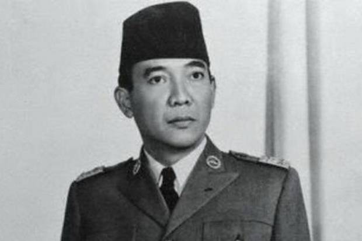
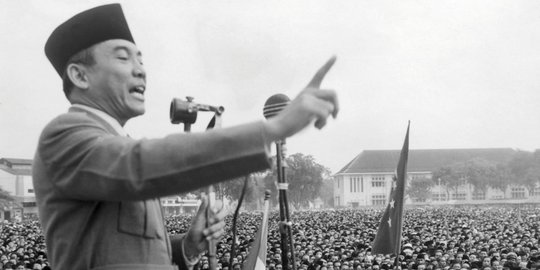

soekarno merupakan putra dari raden soekemi sosrodihardjo dan ida ayu nyoman rai. Ibunda Bung karno merupakan bangsawam bali. kedua orang tua soekarno bertemu saat sang ayah menjadi guru di bali. Soekarni hanya sebentar tinggal dengan kedua orang tuanya di blitar.kemudian beliau pindah ke surabaya untuk menamatkan SD. selama di Surabaya.Bung karno tinggal di kediaman Haji Oemar Said Tjokroaminoto.setelah tamat,bung karno melanjutkan pendididkan di HBS (Hoogere Burger School).lulus tahun 1920,soekarno melanjutkan pendidikan di THS (Taechnische Hoogereschool) di bandung. THS ini merupakan cikal bakal institut Teknologi Bandung . soekarno lulus pada 25 mei 1926 dan mendapat gelar "Ir" setelah lulus,Soekarno mendirikasn Biro insinyur bersama dengan Ir Anwari tahun 1926. selama di badnung . Bung karno aktif dalam banyak organisasi.Beliau juga mendirikan partai Nasional Indonesia pada 4 juli 1927. PNI adalah partai yamh bertujuan untuk memerdekaan bangsa Indonesia. karena tujuan inilah Soekarno di penjara pada 29 desember 1929 dipenjara sukamiskin. bung karno kemudian berulang kali dipenjara karena belum tetap teguh memperjuangkan kemerdekaan Indonesia. Perjuangan soekarno cukup panjang sebelum akhirnya mampu menyatakan kemerdekaan indonesia . tepat pada tanggal 17 Agustus 1945,bersama Mohammad Hatta dan beberapa tokoh lainnya. beliau menyatakan kemerdekaan bangsa. di lansir dari laman RRI. Soekarno sebelumnya sudah mengemukakan dasar negara. Pancasila pada sidang BPUPKI 1 Juni 1945. dasar ini kemudian menjadi dasar negara Indonesia. Kiprah Bung Karno tidak berhenti di lingkup negara Indonesia saja, Bung karno tercatatat berusaha menghimpun bangsa-bangsa untuk membuat gerakan Non Blok . gerakan ini beranggotakan bangsa-bangsa dia asia ,afrika dan amerika latin.Gerakan ini merupakan hasil dari Konfersi Asia Afrika pada 1955 di bandung.bersumber dari laman kepustakaan presiden-presiden Republik Indonesia. bung karno memiliki 3 orang istri selama hidupnya .dari ketiga istrinya ,Soekarno dikaruniai8 orang anak . Fatmawati,istri pertama bung karno , melahirkan guntur, Megawati ,Rachmawati,Sukmawati dan guruh taufan dan bayu adalah putra Soekarno dari hartini.Ratna sari dewi ,istri Soekarno berdarah jepang,memiliki anak bernama kartika . Bung karno menyerahkan jabatannya sebagai presiden Indonesia setelah terjadi gejolak polotik. gejolak iniu disebabkan oleh pembrontakan G-30-S/PKI yang menewaskan banyak perwira TNI . Soekarno wafat di RSPAD tanggal 21 juni 1970 karena sakit yang terus memburuk.beliau dimakamkan di Blitar , dekat dengan makam sang ibunda , Ida Ayu Nyoman Rai .
 